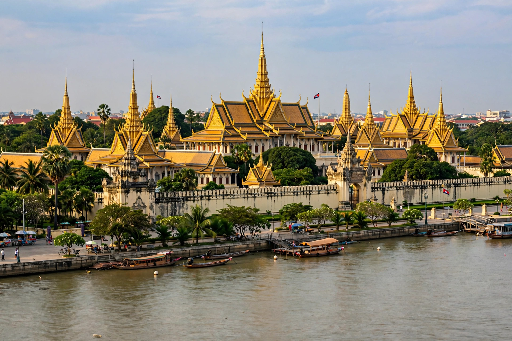

[Image placeholder: The Royal Palace in Phnom Penh, seen from the riverfront]| Country | Cambodia |
|---|---|
| Population | About 2.3 million |
| Founded | 1372 (legend of Lady Penh); capital from 1865 (definitively) |
| Rivers | Mekong, Tonlé Sap and Bassac confluence (Chaktomuk) |
**Phnom Penh** is the capital and most populous city of Cambodia, at the confluence of the Mekong, Bassac and Tonlé Sap rivers. Its name means 'Penh's Hill', for the widow Penh whose temple, Wat Phnom (1373), crowns the city's only hill. Once called the 'Pearl of Asia' for its French colonial boulevards and Art Deco buildings (Central Market, 1937), Phnom Penh was traumatised by the Khmer Rouge, who emptied the city in April 1975 and turned a school, Tuol Sleng, into the S-21 torture prison; the Killing Fields at Choeung Ek lie just outside.
Landmarks include the Royal Palace and Silver Pagoda, the National Museum of Khmer art, and the riverside Sisowath Quay. Since the 1990s the city has rebuilt into a booming, chaotic metropolis of garment factories, Chinese-funded towers and universities, while preserving its low-rise riverside charm in the centre.
Phnom Penh became permanent capital under King Norodom in 1865. Under Sihanouk in the 1950s–60s it doubled in size with New Khmer architecture (Vann Molyvann). Evacuation in 1975 reduced it to a ghost city; survivors returned from 1979, and the 1990s UNTAC period began recovery.